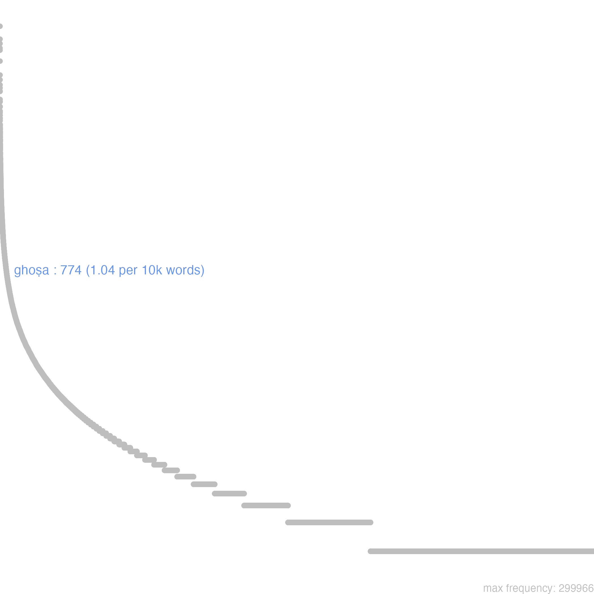
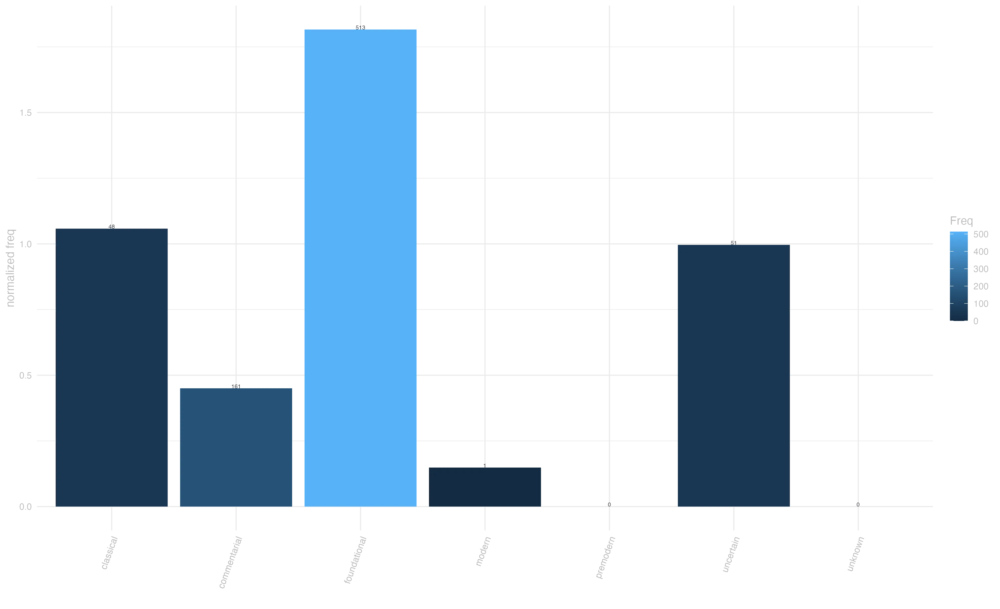
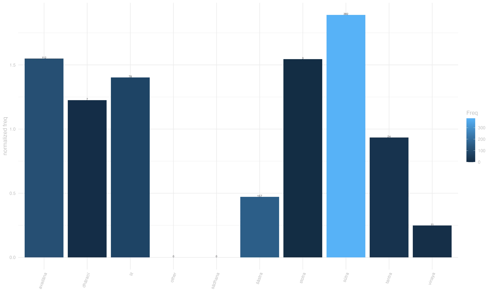

ghoṣa
megha-svara-ghoṣā gambhīratvāt / [mahāyānasūtrālaṃkāra, 80] “It is ‘sounding like the crash of thunder’ because of its profundity.” [Thurman 157]
overview
While not being the most prototypical Sanskrit word for the concept of ‘sound’ (that being probably śabda), at its core, ghoṣa means just that: ‘sound’. Within this broad sense, its semantic spectrum spans three main areas, vocal sound, inanimate sound and, by extension, mosquitoes and cowsheds, i.e. distinctly noisy things. Vocal sounds include proclamations, but even in this sense ghoṣa highlights the auditory dimension of such proclamations, rather than the verbal content of them (cf abhidharmakośabhāṣya 080.26.080.28)1. In sūtras and narrative texts, ghosa is often deployed in this sense in descriptions of powerful characters (e.g. a buddha or a king), where it characterizes their voice as resounding and awe-inspiring, like a thunders and roars (buddhacarita 5.24; dharmasaṃgraha 335)2. For this reason, ghoṣa is often included in lists of a great beings’ qualities (daśabhūmikasūtra 24)3. In the more general sense of non-verbal sound, ghoṣa often refers to sounds that elicit emotional responses, be it pleasant melodies (lalitavistara 113)4 or the intimidating rumble of thunders (mahāyānasūtrālaṃkāra 80).
frequency
Ghoṣa appears across diverse textual traditions, with particularly strong representation in sūtras and non-scholastic literature, which reflects the narrative, non-technical, contexts in which this word tends to appear. While Its dispersion over genres is relatively even, its prominence in pre-classical materials and relative scarcity in later commentarial treatises skews its diachronic distribution towards earlier strata of our corpus.



context
Ghoṣa enters several collocations that shed light on its nuanced semantic spectrum ranging from a pleasant musical sound to a resounding awe-inspiring rumble, to the voice of gods and powerful characters. Notable in the latter nuance is the compound with brahma (divine-voiced sound) , recurrent in our annotated sample (e.g. lalitavistara 169)5. In contexts related to music and ceremonies ghoṣa tends to be compounded with the names of musical instruments, especially powerful ones, as in “śaṅkha-nirghoṣi-ghoṣaiḥ”.6 The resonant quality of ghoṣa comes to the fore with lexical associations involving natural phenomena, such as thunder and avalanches (gaṇḍavyūhasūtra 3)7
connotation
The word ghoṣa presents a predominant neutral connotation, as befits the its typical deployment in descriptive rather than evaluative contexts. Still, several of the descriptions it participates have a distinctively positive coloring, which lends ghoṣa a positive semantic prosody. In our annotated data, this occurs mostly when ghoṣa is associated with divine or Buddha-speech, as exemplified in the Lalitavistara: “su-madhura-vacanā manojña-ghoṣā śaśi va praśānti-karā prasanna-cittā”.8 Negative and neutral-to-negative semantic prosody is rare in our annotated sample, indicating that even if the semantic spectrum of this word touches on the concept of verbalization, denoting the sound of voices, this word not part of the yogācāra critique of language; unlike the near-synonym ruta, whose has stronger connection to the idea of verbal expression made it a target of much criticism, e.g. in the Laṅkāvatārasūtra.
This entry is based on version 6 of of the Visual Dictionary of Buddhist Sanskrit, see data at zenodo.org/records/13985112
Footnotes
vāṅ-nāmni pravarttate nām^ārthaṃ dyotayati n^aiva ghoṣa-mātraṃ vāg yena tu ghoṣeṇ^ārthaḥ pratīyate sa ghoṣo vāk / [abhidharmakośabhāṣya, 080.26.080.28]
“What I call ‘voice’ is not merely vocal sound, but a vocal sound that causes one to attain to an object, that is, a vocal sound with regard to which persons who are speaking are in agreement as to what a certain thing signifies.” [Pruden 251]↩︎atha ghoṣam imaṃ mah^ābhra-ghoṣaḥ pariśuśrāva śamaṃ paraṃ ca lebhe śrutavān sa hi nirvṛt^eti śabdaṃ parinirvāṇa-vidhau matiṃ cakāra // 5 — 25 // buddhacarita 5.24
“Then, as he heard this voice, he obtained supreme calm, he whose voice was like that of a great thunder cloud; for, as he heard the word “fulfilled,” he set his mind on the means to final Nirvanic fulfillment.” [Olivelle 133] ; aśīty-anuvyañjanāni / tadyathā […] megha-garjita-ghoṣatā / madhura-cāru-mañju-svaratā / dharmasaṃgraha 335
“There are eighty secondary characteristics, they are: […] a voice that sounds like thunder, a voice that is sweet, charming and lovely, […].” [Bhikkhu 66]↩︎[…] tathāgata-bala-vaiśārady^āveṇika-buddha-dharma-lakṣaṇ^ānuvyañjana-svara-ghoṣa-saṃpad abhinirhāratayā ca […] daśabhūmikasūtra 24
“[…] accomplishing the completion of the powers, confidences, unique characteristics of Buddha, characteristic marks, minor characteristics, sounds and voices of Tathāgata, […].” [Honda 168]↩︎abhirūp^āntaḥpura-madhya-gatasya śaṅkha-bherī-mṛdaṅga-paṇava-tuṇava-vīṇā-vallaki-saṃpa-tāḍa-kipala-nakula-sughoṣaka-madhura-veṇu-nirnādita-ghoṣa-ruta-nānā-tūrya-saṃgīti-saṃprayoga-pratibodhitasya ye ca nārī-gaṇāḥ snigdha-madhura-manojña-svara-veṇu-nirnādita-nirghoṣa-rutena bodhisattvaṃ pratisaṃbodhayanti sma / lalitavistara 113
“Inside this beautiful palace, the Bodhisattva woke up to the sound of conches, kettledrums, clay drums, wood drums, lutes, harps, tambourines, cymbals, and flutes that produced the most sweet-sounding and melodious tunes to accompany their many sweet songs. The girls woke up the Bodhisattva with beautiful and soft songs accompanied by the melodious tones of flutes.” [Dahl et al./84000 13.17]↩︎hā mama bal^opapetā narāyaṇa-sthāmavan nihata-śatru-gaṇā / hā mama su-māñja-ghoṣā kalaviṅka-ruta-svarā madhura-brahma-rutā // 15.129 // lalitavistara 169
“Alas, my powerful man, who is as strong as Nārāyaṇa, You conquer the hordes of demons. Alas, my gentle love with a voice as sweet as Brahmā’s And as soft as the sound of a nightingale.” [Dahl et al./84000 15.189]↩︎saṃpanne aṅguṣṭha-padme jhaṭiti hṛdi tathā kaṇṭha ev^opakaṇṭhe ḍhakkā-saṃkāśa-tālaiḥ kalapaṭu-paṭahaiḥ śaṅkha-nirghoṣi-ghoṣaiḥ / hā hā huṃ hūṃ kṛtā ye jhaṭiti kaṭakaṭair bhīma-nād^ānumodaiḥ kṣudraṃ ceto na c^aitat su-rava-rajayino yasya tasmai namo astu // 29. 22 // bauddhastotrasaṃgrahaḥ 29↩︎
śailendra-rāja-saṃghaṭṭana-ghoṣeṇa ca / gaṇḍavyūhasūtra 3
“[…] Sound of Mountains Colliding, […].” [Cleary 1136]↩︎su-madhura-vacanā manojña-ghoṣā śaśi va praśānti-karā prasanna-cittā / prahasita-vadanā prabhūta-jihvā parama-su-prīti-karā mune namaste // lalitavistara 266
“You whose speech is exceedingly melodious and whose cadence is captivating, Who is soothing and clear minded like the moon, Whose face is smiling and whose tongue is long, To you, Supreme Enrapturing Sage, we pay homage!” [Dahl et al./84000 23.59]↩︎